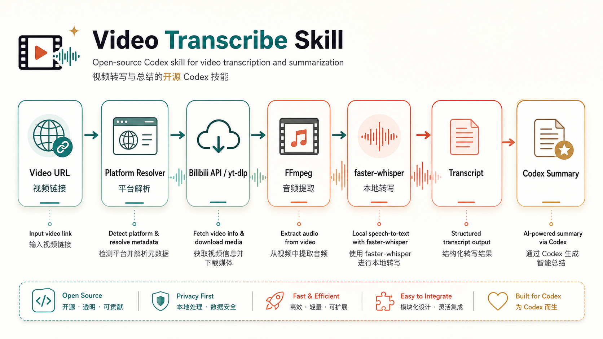

Bilibili-native extraction
BV ids are resolved through public Bilibili APIs, then the highest-bandwidth DASH audio stream is downloaded with browser-like headers.
Offline-first local ASR for Codex
A README-first, open-source Codex skill for Bilibili, YouTube, generic video URLs, and local media. No backend, no account, no cloud transcription key: just FFmpeg, faster-whisper, and a transcript Codex can read.
视频没有字幕时，这个 skill 会先拿到音频、转成稳定格式、用本地 Whisper 生成时间戳转写。 它不是托管服务，不自建后端，不要求云端转写 key；确定性步骤交给代码，判断类工作交给模型。
Technical route / 技术路线
The generated diagram shows the full path from video link to Codex summary. The text pipeline below keeps the route readable and auditable even when image text is not enough.

Why it works
BV ids are resolved through public Bilibili APIs, then the highest-bandwidth DASH audio stream is downloaded with browser-like headers.
FFmpeg normalizes every source to 16 kHz mono audio before faster-whisper runs locally on CPU with int8 compute. No server layer is required.
The model reads a timestamped transcript. It does not decide routing, retry policy, or whether a download succeeded.
Install
Clone the repository, install FFmpeg, create the local Whisper environment, and invoke
$video-transcribe whenever a video link needs to become text.
git clone https://github.com/UKplus8HRS/video-transcribe-skill.git
winget install --id Gyan.FFmpeg --exact
pip install -r requirements.txt中文介绍
默认使用本地 faster-whisper，适合临时视频摘要、私有素材处理和无字幕内容理解。
不做账号、队列、面板或托管转写服务。仓库就是 skill、脚本、README 和轻量文档页。
每行都有时间戳，并写入 metadata，方便核对来源、模型、语言和文件路径。